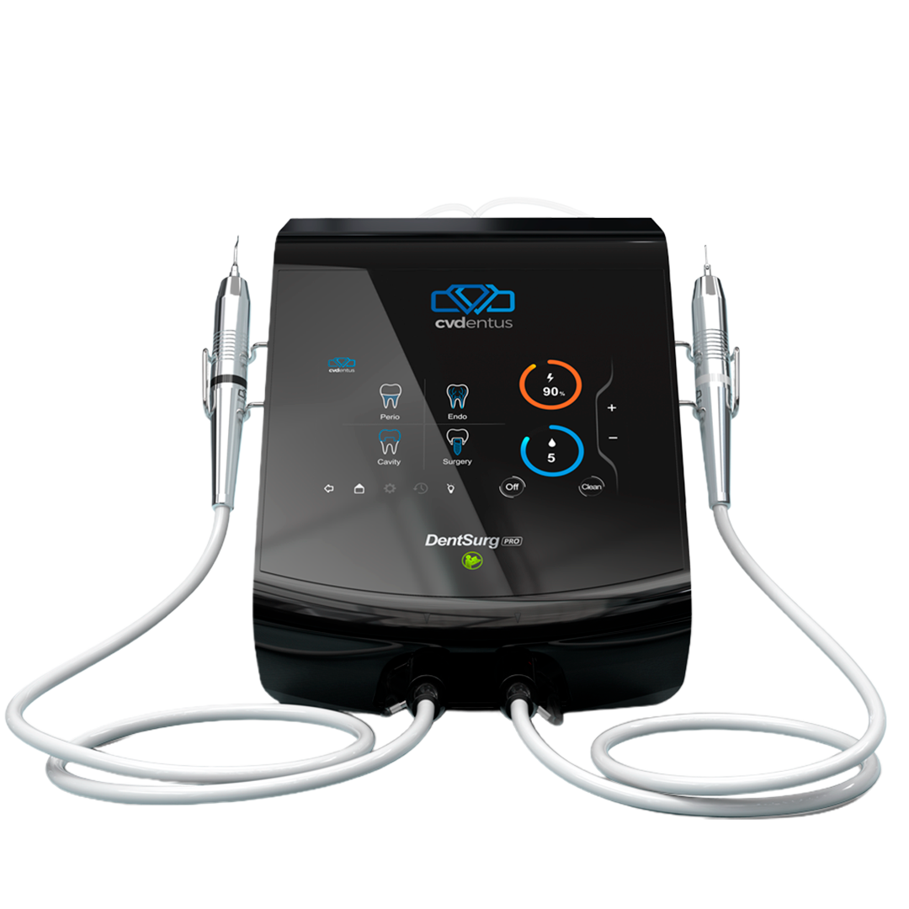

Piezocirurgia ultrassônica de precisão para implantodontia, periodontia e endodontia. Corte seletivo em tecido duro, preservando o tecido mole — em cada procedimento.

Ciência, engenharia e diamante CVD a serviço da odontologia minimamente invasiva
A CVDentus desenvolve equipamentos de ultrassom piezoelétrico integrados a insertos produzidos com diamante CVD (Chemical Vapor Deposition) — uma estrutura diamantada contínua, muito mais resistente ao desgaste que os instrumentos diamantados convencionais. O DentSurg Pro é a plataforma cirúrgica da linha, voltada a implantodontistas e cirurgiões que exigem potência elevada, controle preciso e segurança em osteotomias, cirurgia periodontal e bucomaxilofacial.
Um sistema piezocirúrgico que une a precisão do ultrassom à engenharia do diamante CVD
Quatro modos clínicos dedicados — Perio, Endo, Cavity e Surgery — combinam vibração ultrassônica linear para corte seletivo com insertos de diamante CVD: uma camada diamantada contínua, sintetizada átomo por átomo, que mantém a capacidade de corte por mais tempo do que abrasivos convencionais colados.
Potência e controle para a cirurgia de maior complexidade
Números que comprovam a precisão do DentSurg Pro
Especificações técnicas
A piezocirurgia respaldada pela literatura
Confiado por especialistas em implantodontia
Leve o DentSurg Pro para a sua clínica